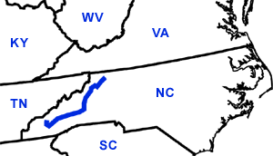

Day Seven
Doughton Park, NC - Smokey Mountain National Park, NC
Date: 06/17/2002
Distance: 243 miles
Weather: Mostly sunny. high 70's.
Spent most of the day twisting through North Carolina on the Blue Ridge State Parkway. The views of the mountains are incredible. But it's easy to get sick if you aren't driving.
We decided to stop in the town of Asheville for lunch. On the way in we pirated a Wireless Internet access point courtesy of Gateway computer store. In the actual town we found a small sandwich shop called the Blue Moon Cafe and Bakery. Yum!
We finally made it to the Smokey Mountain National Park at about 6:00. To get there you pass through a Cherokee Indian Reservation. We did stop in the reservation, but not to buy fake head-dresses or pan for gold, only to get some groceries.
We camped at the first site in the park, had a grilled cheese dinner, and Corin entertained herself by trying to make a fire. Finally, looking so helpless, some nice southern gentlemen came to her aid with tupintine drenched woodchips. Thanks guys, the SOMORES were excellent!
Turkeys in the road